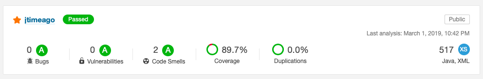
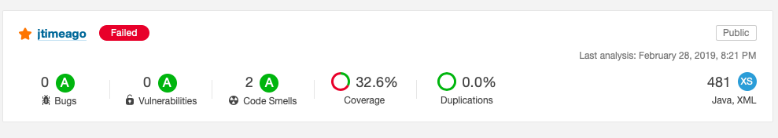

Тестирование JSP тэгов
Недавно для себя открыл совершенно бесплатный для open source проектов sonarcloud. Я верю, что статичный анализ кода - это очень полезная штука, поэтому сразу же решил перевести свои наиболее популярные проекты туда.
Среди них был достаточно маленький проект jtimeago. Это небольшая библиотека jsp тэгов для вывода дат.
После добавления проекта через travis, я увидел, что jtimeago полностью зеленый.

Если зайти на страницу проекта в sonarcloud, то видно что все показатели хорошие за исключением нескольких мелких code smells. Пофиксить их можно было достаточно тривиально, что я и решил сделать.
Однако, после моего коммита sonarcloud начал выдавать статус “Failed”.

Оказывается в нём есть несколько метрик, которые влияют на финальный статус проекта:
- количество критичных багов
- процент покрытия кода тестами за последние 30 дней
- процент дублирующего кода за последние 30 дней
После моего героического изменения кода, он стал отображаться как нетестируемый за последние 30 дней. Тут нужно понимать, что код - это несколько классов для JSP. Внутри него есть сильная привязка к servlet api, которую так просто нельзя замокать. Но и оставлять такой простой проект в статусе “Quality: Failed” мне не позволяла гордость. Я засучил рукава и принялся исследовать.
Сами классы реализуют javax.servlet.jsp.tagext.TagSupport. Это часть спецификации J2EE для создания тэгов в JSP. Надо сказать технология достаточно древняя и во время её проектирования ни о каком юнит тестировании ещё не думали. Исходя из этого я решил поднимать честный web контейнер для каждого теста, рендерить страницу и сравнивать с результатом.
Jetty - это легковесный web контейнер, который полностью реализует спецификацию j2ee. Его удобно запускать в embedded режиме. Так же в самом Jetty проекте есть несколько модулей для тестирования, которые предоставляют достаточно удобные функции. Подключается так:
<dependency>
<groupId>org.eclipse.jetty</groupId>
<artifactId>jetty-http</artifactId>
<version>${jetty.version}</version>
<classifier>tests</classifier>
<scope>test</scope>
</dependency>После чего будет доступен класс org.eclipse.jetty.http.HttpTester. С помощью него можно удобно выполнять HTTP запросы и получать ответы:
HttpTester.Request request = HttpTester.newRequest();
HttpTester.Response response;
request.setMethod("GET");
request.setVersion("HTTP/1.0");
request.setHeader("Host", "tester");
request.setURI("/" + pageName + ".jsp");
response = HttpTester.parseResponse(HttpTester.from(localConnector.getResponse(request.generate())));Сами тесты достаточно простые. Создаётся jsp страница
<%@page contentType="text/html; charset=UTF-8" pageEncoding="UTF-8" trimDirectiveWhitespaces="true" %>
<%@ taglib prefix="ta" uri="https://github.com/dernasherbrezon/jtimeago" %>
<%
java.util.Date comment = new java.util.Date(1534320716000L);
pageContext.setAttribute("comment", comment);
%>
<ta:formatDate value="${comment}" var="outputCommentDate" pattern="dd MMM yyyy HH:mm" />
${outputCommentDate}
Для неё создаётся соответствующий файл проверки результатов:
15 Aug 2018 08:11
Параметризованный junit тест проходит по всем файлам в директории и выполняет один и тот же код: запросить страницу и сравнить её с ожидаемой. После того, как я написал несколько тестов, оказалось, что у меня есть несколько багов:
- Если указать аттрибут var и при этом не указывать scope, то JSP вернёт ошибку 502. По умолчанию scope оказывался равен 0, а это неверное значение.
- Изначально scope можно было задавать цифрами. Эти цифры достаточно неочевидны и не совместимы с jstl. Поскольку я старался сделать тэг максимально похожим на fmt:formatDate, то и семантику необходимо было сохранить. scope должен задаваться строкой и конвертироваться в цисло.
- Геттеры необязательно указывать для аттрибутов тэга.
После всех исправлений покрытие тестами улучшилось и проект снова стал зелёным:

Несмотря на то, что sonar считает проект зелёным и тэг отрабатывает в настоящем web контейнере как надо, мне не хватает тестов соответствия спецификации. J2EE стандарт достаточно большой с множеством хитрых требований, которые не все полностью реализуют. Например, тэги могут создаваться и кэшироваться на диск. Для этого javax.servlet.jsp.tagext.TagSupport реализует интерфейс java.io.Serializable. J2EE ожидает, что после сериализации кэша тэгов на диск, его можно восстановить и он будет работать. На практике необходимо, чтобы каждый тэг правильно реализовывал java.io.Serializable. Я пока не придумал, как это можно сделать.
Выводы
- Sonarcube достаточно мощный и простой в настройке инструмент. Пользуйтесь им для своих проектов.
- Процент покрытия тестами кода - важный параметр.
- Даже если в проекте всего 3 класса, то тесты нужны.